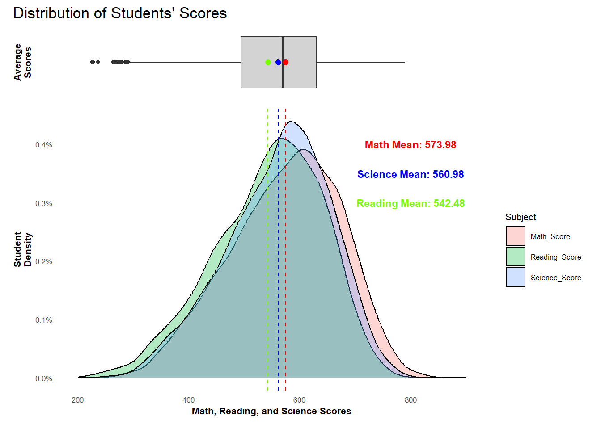
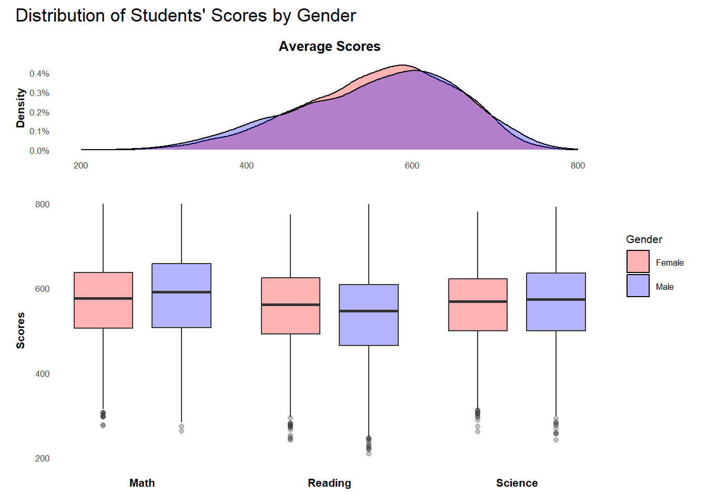
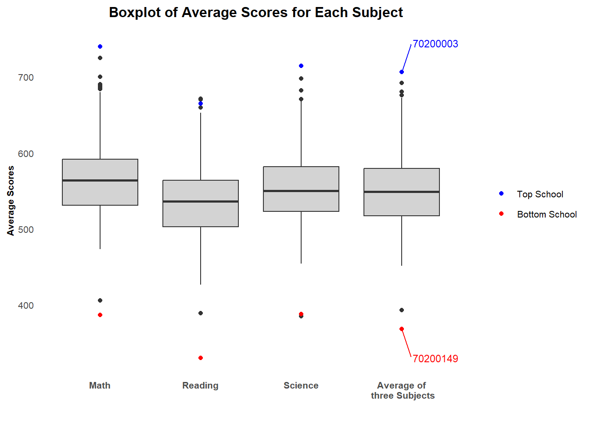
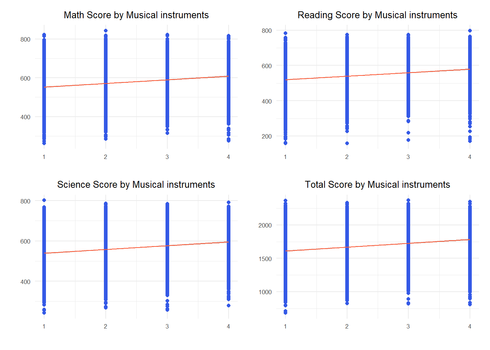
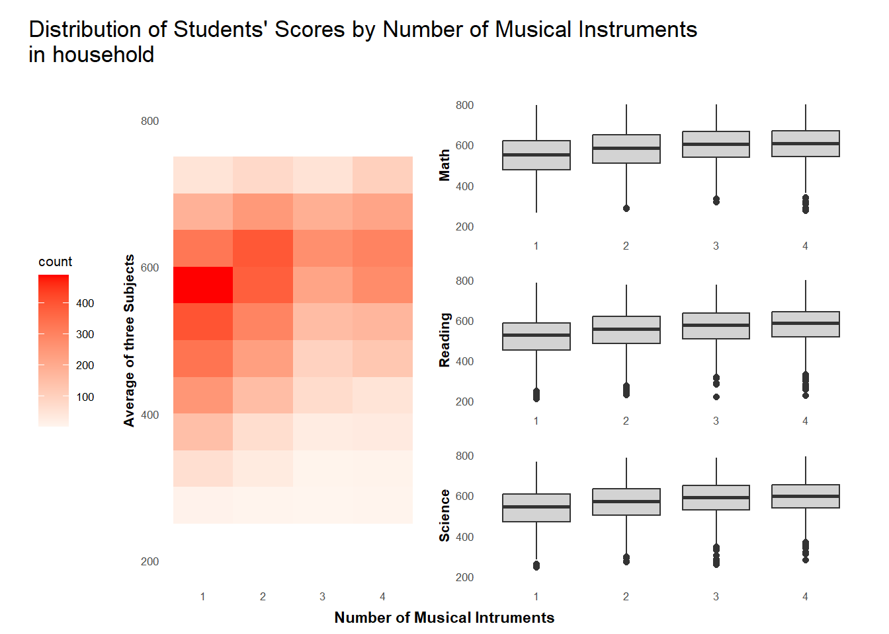

Show the code
pacman::p_load(tidyverse,
haven,
dplyr,
plotly,
ggrepel,
patchwork,
ggthemes,
hrbrthemes)This exercise aims to critique and improved on the visualizations created by peers from Take Home Exercise 1 based on clarity and aesthetics. For each visualization, I will be listing what had worked well, what did not, and what I think would help make it better. Finally, the visualization will be re-made based on my suggestions.
First, let us prepare the required data.
We begin by loading the required R packages.
pacman::p_load(tidyverse,
haven,
dplyr,
plotly,
ggrepel,
patchwork,
ggthemes,
hrbrthemes)Similar to exercise 1, the data we are using can be found from the PISA 2022 Database. The database contains full set of responses from individual students, principals, and parents. In this task, we will only be looking at the students questionnaire data file. In particular, we are only interested in the data of students from Singapore.
stu_qqq_SG <- read_rds("data/stu_qqq_SG.rds")We will be using a curated set of variables for our analysis. The variables and their descriptions are listed in the table below.
| Variable | Description | Data Type |
|---|---|---|
| CNTSCHID | The unique School’s ID | Categorical |
| CNTSTUID | The unique student’s ID | Categorical |
| Math_Score | Average PV scores for Math | Numerical |
| Reading_Score | Average PV scores for Reading | Numerical |
| Science_Score | Average PV scores for Science | Numerical |
| Total_Score | Overall average score from the sum of Math, Reading, and Science | Numerical |
| Gender | Male or Female | Numerical |
| Own_Room | Whether student has his or her own room | Categorical |
| mi-num | Number of musical instruments at student’s home | Numerical |
The following code extracts and integrates them in a new data frame.
# Create a new dataset PV by extracting relevant variables from stu_qqq_SG
PV <- stu_qqq_SG %>%
mutate(
Math_Score = rowMeans(select(., contains("PV")&contains("MATH")), na.rm = TRUE),
Reading_Score = rowMeans(select(., contains("PV")&contains("READ")), na.rm = TRUE),
Science_Score = rowMeans(select(., contains("PV")&contains("SCIE")), na.rm = TRUE),
Total_Score = Math_Score + Reading_Score + Science_Score,
Gender = ifelse(ST004D01T == 1, "Female", "Male"),
Own_Room = ifelse(ST250Q01JA == 1, "Yes" , "No"),
mi_num = ST251Q06JA
) %>%
select(CNTSCHID, CNTSTUID, Math_Score, Reading_Score, Science_Score, Total_Score, Gender, Own_Room, mi_num)Another data set is created for schools. The following code calculates the maths, reading, and science, as well as the average grades in these three subjects for each school’s students.
School_Avg_Scores <- PV %>%
group_by(CNTSCHID) %>%
summarize(
Avg_Math_Score = mean(Math_Score, na.rm = TRUE),
Avg_Reading_Score = mean(Reading_Score, na.rm = TRUE),
Avg_Science_Score = mean(Science_Score, na.rm = TRUE),
Avg_Score = mean(Total_Score/3, na.rm = TRUE)
)
School_Avg_Scores_long <- School_Avg_Scores %>%
select(CNTSCHID,
starts_with("Avg_Math"),
starts_with("Avg_Reading"),
starts_with("Avg_Science"),
starts_with("Avg_Score")) %>%
pivot_longer(cols = -CNTSCHID,
names_to = "Subject",
values_to = "Score")The exercise I have chosen for the make-over can be found here. In total, there are 5 visualizations.
The following code plots histograms of maths, reading, science, and total score scores to observe the distribution of student performance:
plot1 <- ggplot(data = PV, aes(x = Math_Score)) +
geom_histogram(bins = 10, boundary = 100, color = "blue", fill = "#3459e6") +
ggtitle("Distribution of Maths scores")+
theme_minimal() +
theme(text = element_text(size = 8),
plot.title = element_text(hjust = 0.5))
plot2 <- ggplot(data = PV, aes(x = Reading_Score)) +
geom_histogram(bins = 10, boundary = 100, color = "blue", fill = "#3459e6") +
ggtitle("Distribution of Reading scores")+
theme_minimal() +
theme(text = element_text(size = 8),
plot.title = element_text(hjust = 0.5))
plot3 <- ggplot(data = PV, aes(x = Science_Score)) +
geom_histogram(bins = 10, boundary = 100, color = "blue", fill = "#3459e6") +
ggtitle("Distribution of Science scores")+
theme_minimal() +
theme(text = element_text(size = 8),
plot.title = element_text(hjust = 0.5))
plot4 <- ggplot(data = PV, aes(x = Total_Score)) +
geom_histogram(bins = 10, boundary = 100, color = "blue", fill = "#3459e6") +
ggtitle("Distribution of Total scores")+
theme_minimal() +
theme(text = element_text(size = 8),
plot.title = element_text(hjust = 0.5))
plot1 + plot2 + plot3 + plot4
Clarity
X-axis label “count” is not meaningful and should be replaced with something more informative
Axes limits are not aligned and can be misleading, especially for the charts showing Math, Reading, and Science scores
Bin size to too large, which may conceal some more intricate movements in data.
The plot layout of 2x2 is not ideal. I would use a layout where easy comparison can be made for Math, Reading, and Science.
On the same point, I would opt not to show Total Scores as it gives no further value add to what the first 3 charts can already show.
Aesthetics
Soft grid lines are not distracting
the “_” in the y-axis label appears unprofessional
The colour choice is neat and simple
The repetition of “Distribution” in each chart’s title is unnecessary, and can be mentioned in the plot title instead
p11 <- ggplot(data = PV, aes(x = Math_Score)) +
geom_histogram(binwidth = 50, boundary = 100, color = "lightblue4", fill = "lightblue") +
geom_vline(xintercept = mean(PV$Math_Score),
colour = "red",
linetype = "dashed") +
annotate(
geom = "text",
x = mean(PV$Math_Score) - 180,
y = 1400,
label = paste0("Mean: \n", round(mean(PV$Math_Score),2)),
color = "red",
fontface = 2
) +
xlab("Math") +
ylab("Number of Students") +
xlim(200, 900) +
ylim(0, 1500) +
theme_minimal() +
theme(text = element_text(size = 8),
plot.title = element_text(hjust = 0.5),
plot.margin = unit(c(30,0,30,0), "pt"))
p12 <- ggplot(data = PV, aes(x = Reading_Score)) +
geom_histogram(binwidth = 50, boundary = 100, color = "lightblue4", fill = "lightblue") +
geom_vline(xintercept = mean(PV$Reading_Score),
colour = "red",
linetype = "dashed") +
annotate(
geom = "text",
x = mean(PV$Reading_Score) - 180,
y = 1400,
label = paste0("Mean: \n", round(mean(PV$Reading_Score),2)),
color = "red",
fontface = 2
) +
xlab("Reading") +
ylab("Number of Students") +
xlim(200, 900) +
ylim(0, 1500) +
theme_minimal() +
theme(text = element_text(size = 8),
plot.title = element_text(hjust = 0.5))
p13 <- ggplot(data = PV, aes(x = Science_Score)) +
geom_histogram(binwidth = 50, boundary = 100, color = "lightblue4", fill = "lightblue") +
geom_vline(xintercept = mean(PV$Science_Score),
colour = "red",
linetype = "dashed") +
annotate(
geom = "text",
x = mean(PV$Science_Score) - 180,
y = 1400,
label = paste0("Mean: \n", round(mean(PV$Science_Score),2)),
color = "red",
fontface = 2
) +
xlab("Science") +
ylab("Number of Students") +
xlim(200, 900) +
ylim(0, 1500) +
theme_minimal() +
theme(text = element_text(size = 8),
plot.title = element_text(hjust = 0.5))
p1 <- p11 + p12 + p13
p1 <- p1 +
plot_layout(guides = "collect",
axis_titles = "collect",
axes = "collect") +
plot_annotation(
title = "Distribution of Scores"
)
p1
PV[, c("CNTSTUID", "Math_Score", "Reading_Score", "Science_Score")] %>% gather(key = "Subject", value = "Scores", Math_Score, Reading_Score, Science_Score)# A tibble: 19,818 × 3
CNTSTUID Subject Scores
<dbl> <chr> <dbl>
1 70200001 Math_Score 605.
2 70200002 Math_Score 690.
3 70200003 Math_Score 677.
4 70200004 Math_Score 401.
5 70200005 Math_Score 436.
6 70200006 Math_Score 518.
7 70200007 Math_Score 708.
8 70200008 Math_Score 620.
9 70200009 Math_Score 736.
10 70200010 Math_Score 555.
# ℹ 19,808 more rowstemp <- PV[, c("CNTSTUID", "Math_Score", "Reading_Score", "Science_Score")] %>% gather(key = "Subject", value = "Scores", Math_Score, Reading_Score, Science_Score)
p11 <- ggplot(data = temp, aes(x = Scores, fill = Subject)) +
geom_density(alpha = 0.3) +
xlab("Math, Reading, and Science Scores") +
ylab("Density") +
xlim(200, 900) +
theme_minimal() +
theme(text = element_text(size = 8),
plot.title = element_text(hjust = 0.5)) +
geom_vline(xintercept = mean(PV$Math_Score),
colour = "darkred",
linetype = "dashed") +
geom_vline(xintercept = mean(PV$Reading_Score),
colour = "darkgreen",
linetype = "dashed") +
geom_vline(xintercept = mean(PV$Science_Score),
colour = "darkblue",
linetype = "dashed") +
annotate(
geom = "text",
x = mean(PV$Science_Score) - 180,
y = 0.0025,
label = paste0("Math Mean: \n", round(mean(PV$Math_Score),2)),
color = "darkred",
fontface = 2,
size = 3
) +
annotate(
geom = "text",
x = mean(PV$Science_Score) - 180,
y = 0.003,
label = paste0("Reading Mean: \n", round(mean(PV$Reading_Score),2)),
color = "darkgreen",
fontface = 2,
size = 3
) +
annotate(
geom = "text",
x = mean(PV$Science_Score) - 180,
y = 0.0035,
label = paste0("Science Mean: \n", round(mean(PV$Science_Score),2)),
color = "darkblue",
fontface = 2,
size = 3
)
p12 <- ggplot(data = PV, aes(x = Total_Score)) +
geom_density(fill = "lightgray") +
xlab("Total Scores")+
ylab("Density") +
theme_minimal() +
theme(text = element_text(size = 8),
plot.title = element_text(hjust = 0.5))
p1 <- p12 / p11
p1 <- p1 +
plot_layout(axes = "collect") +
plot_annotation(
title = "Distribution of Scores"
)
p1
The following code generates density plots to compare the distribution of academic performance between students of different genders, providing a comprehensive understanding of the gender differences in academic achievement.
plot1 <- ggplot(data = PV, aes(x = Math_Score, fill = Gender)) +
geom_density(alpha = 0.7, position = "identity", stat = "density") +
scale_fill_manual(values = c("Female" = "#FF5733", "Male" = "#3459e6")) +
labs(title = "Math Scores by Gender") +
theme(legend.position = "none") +
scale_y_continuous(labels = scales::percent) +
theme_minimal() +
theme(text = element_text(size = 8), plot.title = element_text(hjust = 0.5))
plot2 <- ggplot(data = PV, aes(x = Reading_Score, fill = Gender)) +
geom_density(alpha = 0.7, position = "identity", stat = "Density") +
scale_fill_manual(values = c("Female" = "#FF5733", "Male" = "#3459e6")) +
labs(title = "Reading Scores by Gender") +
theme(legend.position = "none") +
scale_y_continuous(labels = scales::percent)+
theme_minimal() +
theme(text = element_text(size = 8),
plot.title = element_text(hjust = 0.5))
plot3 <- ggplot(data = PV, aes(x = Science_Score, fill = Gender)) +
geom_density(alpha = 0.7, position = "identity", stat = "Density") +
scale_fill_manual(values = c("Female" = "#FF5733", "Male" = "#3459e6")) +
labs(title = "Science Scores by Gender") +
theme(legend.position = "none") +
scale_y_continuous(labels = scales::percent)+
theme_minimal() +
theme(text = element_text(size = 8),
plot.title = element_text(hjust = 0.5))
plot4 <- ggplot(data = PV, aes(x = Total_Score, fill = Gender)) +
geom_density(alpha = 0.7, position = "identity", stat = "density") +
scale_fill_manual(values = c("Female" = "#FF5733", "Male" = "#3459e6")) +
labs(title = "Total Scores by Gender") +
scale_y_continuous(labels = scales::percent)+
theme_minimal() +
theme(text = element_text(size = 8),
plot.title = element_text(hjust = 0.5))
combined_plots <- plot1 + plot2 + plot3 + plot4 +
plot_layout(guides = "collect")
combined_plotsThis visualization is very similar to the previous, and have the same points for clarity and aesthetics. Therefore, I’ll skip straight to the remade visualization.
The following code draws box plots showing the distribution of school average scores in each subject, with text labels identifying the four highest-scoring schools and the two lowest-scoring schools in each subject.
outliers_data <- School_Avg_Scores %>%
pivot_longer(cols = starts_with("Avg_"), names_to = "Subject", values_to = "Score") %>%
group_by(Subject) %>%
arrange(Score) %>%
slice(c(1:2, (n() - 3):(n())))
ggplot(School_Avg_Scores_long, aes(x = Subject, y = Score, fill = Subject)) +
geom_boxplot(fill = "#3459e6") +
geom_text_repel(data = outliers_data, aes(label = CNTSCHID),
position = position_dodge(width = 1),
box.padding = 0.8,
force = 1,
segment.color = "grey50",
size = 2) + # Use ggrepel's geom_text_repel
labs(title = "Boxplot of Average Scores for Each Subject", x = "", y = "") +
theme_minimal() +
theme(text = element_text(size = 10),
plot.title = element_text(hjust = 0.5))
Clarity
Lack of y-axis label
annotations are cluttered and difficult to read. It seems like the intention was to highlight the best and worst performing schools for Avg_Score, as well as their position on Math, Reading, and Science respectively. In this case, I would only single out one school for best and one school for worst, and use a different colour to highlight their position on each boxplot.
Aesthetics
Soft grid lines are not distracting
the “_” in the y-axis label appears unprofessional
The colour choice is neat and simple
The following code shows scatter plots of students’ maths, reading, science and overall performance against the number of musical instruments owned, as well as showing the relationship by fitting a line through linear regression.
plot_math <- ggplot(data=PV, aes(x=mi_num, y=Math_Score)) +
geom_point(color="#3459e6") +
geom_smooth(method=lm, size=0.5,color = "#FF5733") +
labs(title ="Math Score by Musical instruments", x = "", y = "")+
theme_minimal() +
theme(text = element_text(size = 8),
plot.title = element_text(hjust = 0.5))
plot_reading <- ggplot(data=PV, aes(x=mi_num, y=Reading_Score)) +
geom_point(color="#3459e6") +
geom_smooth(method=lm, size=0.5,color = "#FF5733") +
labs(title ="Reading Score by Musical instruments", x = "", y = "")+
theme_minimal() +
theme(text = element_text(size = 8),
plot.title = element_text(hjust = 0.5))
plot_science <- ggplot(data=PV, aes(x=mi_num, y=Science_Score)) +
geom_point(color="#3459e6") +
geom_smooth(method=lm, size=0.5,color = "#FF5733") +
labs(title ="Science Score by Musical instruments", x = "", y = "")+
theme_minimal() +
theme(text = element_text(size = 8),
plot.title = element_text(hjust = 0.5))
plot_total <- ggplot(data=PV, aes(x=mi_num, y=Total_Score)) +
geom_point(color="#3459e6") +
geom_smooth(method=lm, size=0.5,color = "#FF5733") +
labs(title ="Total Score by Musical instruments", x = "", y = "")+
theme_minimal() +
theme(text = element_text(size = 8),
plot.title = element_text(hjust = 0.5))
combined_plot <- plot_math + plot_reading + plot_science + plot_total
combined_plot
Clarity
Lack of x and y axis labels
Choice of scatter plot is confusing and not meaningful. It does not clearly show the distribution of grades and number of students at each x-axis tick.
The geom_smooth line makes little sense due to the nature of how the scatter points look like. (we can’t really tell that the line is going through the mean)
Aesthetics
Soft grid lines are not distracting
The colour choice is neat and simple
The repetition of “by Musical Instruments” in each chart’s title is unnecessary, and can be mentioned in the plot title instead
The following code plots box-and-line graphs to compare student performance in maths, reading, science and overall scores by whether or not they had the room to themselves.
p1 <- ggplot(data = PV, aes(x =Math_Score , y = Own_Room)) +
geom_boxplot(fill = "#3459e6") +
labs(title ="Math Score by Private Space",x = "", y = "")+
theme_minimal() +
theme(text = element_text(size = 8),
plot.title = element_text(hjust = 0.5))
p2 <- ggplot(data = PV, aes(x =Reading_Score , y = Own_Room)) +
geom_boxplot( fill = "#3459e6") +
labs(title ="Reading Score by Private Space", x = "", y = "")+
theme_minimal() +
theme(text = element_text(size = 8),
plot.title = element_text(hjust = 0.5))
p3 <- ggplot(data = PV, aes(x = Science_Score , y = Own_Room)) +
geom_boxplot( fill = "#3459e6") +
labs(title ="Science Score by Private Space", x = "", y = "")+
theme_minimal() +
theme(text = element_text(size = 8),
plot.title = element_text(hjust = 0.5))
p4 <- ggplot(data = PV, aes(x = Total_Score , y = Own_Room)) +
geom_boxplot( fill = "#3459e6") +
labs(title ="Total Score by Private Space", x = "", y = "")+
theme_minimal() +
theme(text = element_text(size = 8),
plot.title = element_text(hjust = 0.5))
combined_plot<- p1 + p2 + p3 + p4
combined_plot
Clarity
Clarity
Title is not informative, and does not make sense with y-axis labels “Yes” and “No”. Could re-phrase “Private Space” into more commonly used words such as “own room”
x-axis limits are not aligned and can be misleading, especially for the charts showing Math, Reading, and Science scores
the plot layout of 2x2 is not ideal given that the chart for Total Score is fundamentally different from the other 3. I would use a layout where easy comparison can be made for Math, Reading, and Science, while using the Total_Score chart to give a “summary” feel
Showing results for NA is unnecessary as it does not really reveal any useful information
Aesthetics
Soft grid lines are not distracting
Different colour fill could be used to contrast the results of “Yes” and “No”
The repetition of “by Private Space” in each chart’s title is unnecessary, and can be mentioned in the plot title instead